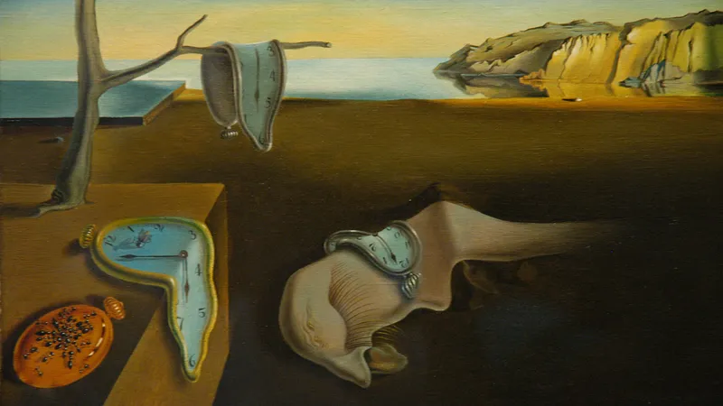

Paintings of great artists
Mona Lisa

مونالیزا یک اثر معروف نقاش ایتالیایی به نام لئوناردو داوینچی است
Girl with a Pearl Earring

نقاشی دختری با گوشواره مروارید یک تابلوی نقاشی رنگ روغن مربوط به دوره طلایی نقاشی در قرن هفدهم است.
The Starry Night

The Starry Night (Dutch: De sterrennacht) is an oil-on-canvas painting by the Dutch Post-Impressionist painter Vincent van Gogh painted in June 1889. It depicts the view from the east-facing window of his asylum room at Saint-Rémy-de-Provence, just before sunrise, with the addition of an imaginary village
The Persistence of Memory
The Persistence of Memory (Spanish: La persistencia de la memoria) is a 1931 painting by artist Salvador Dalí and one of the most recognizable works of Surrealism.
The birth of Venus
The Birth of Venus (Italian: Nascita di Venere [ˈnaʃʃita di ˈvɛːnere]) is a painting by the Italian artist Sandro Botticelli, probably executed in the mid 1480s. It depicts the goddess Venus arriving at the shore after her birth, when she had emerged from the sea fully-grown (called Venus Anadyomene and often depicted in art). The painting is in the Uffizi Gallery in Florence, Italy.